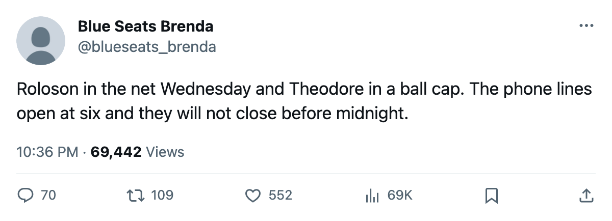
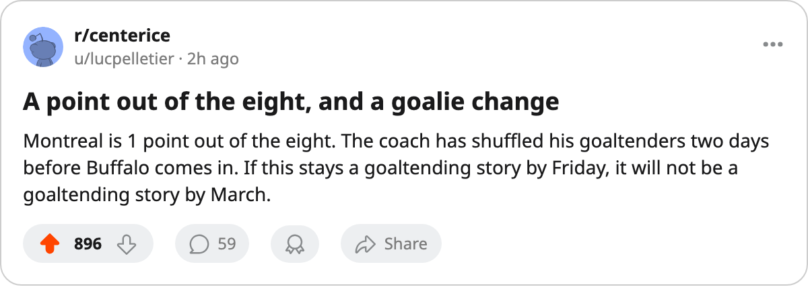

Goalie Watch: Montreal Moves Roloson Up and Takes Theodore Off the Dress List
Theodore had made 33 of Montreal's 41 starts. Before Buffalo's visit on Wednesday, the depth chart reads differently, and the Canadiens have not designated an injury.
 Luc PelletierMontreal correspondent · Home Ice Network
Luc PelletierMontreal correspondent · Home Ice Network
 Montreal Canadiens has moved
Montreal Canadiens has moved  Dwayne Roloson82 to the top of its goaltending depth chart, recalled Levente Szuper75 and taken
Dwayne Roloson82 to the top of its goaltending depth chart, recalled Levente Szuper75 and taken  Jose Theodore87 off the dress list before Wednesday's visit from
Jose Theodore87 off the dress list before Wednesday's visit from  Buffalo Sabres.
Buffalo Sabres.
The Canadiens sit 9th in the East with 44 points, 1 behind  Philadelphia Flyers for the eighth line. The club has not designated an injury for Theodore, who had started 33 of Montreal's 41 games, an 80-percent share.
Philadelphia Flyers for the eighth line. The club has not designated an injury for Theodore, who had started 33 of Montreal's 41 games, an 80-percent share.
Roloson has started 8, a 20-percent share, and Szuper 1. No reason or return date has been given, and Theodore does not appear on the injured list. The Canadiens lost 1-2 at  New Jersey Devils on 2006-01-07.
New Jersey Devils on 2006-01-07.
Buffalo Sabres arrives with 43 points, 11th in the East, after a 3-1 win at Philadelphia on 2006-01-07. The clubs have met twice this season; Montreal has a win and an overtime loss in the 2, the goals level at 5-5.

Behind the line:  Carolina Hurricanes 44, Montreal 44, Buffalo 43,
Carolina Hurricanes 44, Montreal 44, Buffalo 43,  Ottawa Senators 41. Roloson's 8 appearances are the most of anyone behind Theodore this season. Montreal has 41 games left, starting Wednesday with Roloson listed first.
Ottawa Senators 41. Roloson's 8 appearances are the most of anyone behind Theodore this season. Montreal has 41 games left, starting Wednesday with Roloson listed first.

